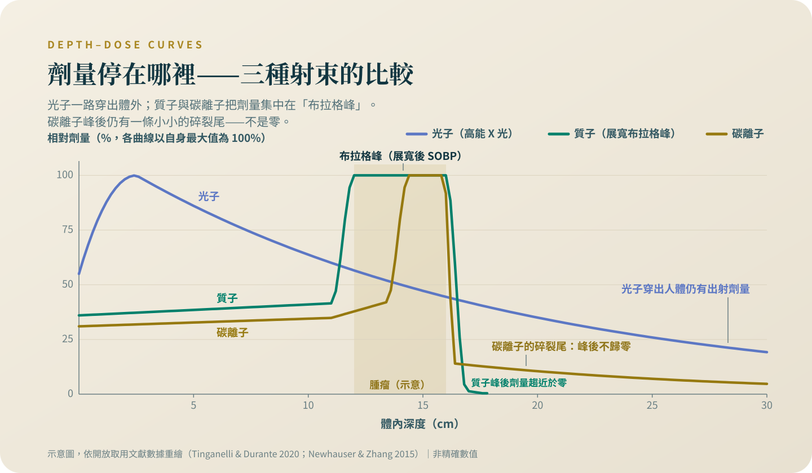

重粒子：比較重，不等於比較好
碳離子唯一讀出的隨機試驗，是一個對質子的安全性比較，結果無差異。這一篇拆解 RBE 的真正意思，和台灣查得到、查不到的事實。
日本用二十年治了上萬人，全國登錄裡最大宗卻是攝護腺癌——一個光子也治得很好的癌別。這一篇從這個落差讀起：「強」在物理上是什麼意思、隨機試驗留下什麼紀錄、台灣公告了什麼、又少了哪一個數字。
警語一（排擠效應）：這個專題裡的治療，多數是自費、多數在標準治療之外。做決定之前要先知道，它們排擠掉的通常不是時間，是三樣真正有價值的東西：還沒用完的標準治療、後線會用到的錢、以及臨床試驗的資格（很多試驗會排除近期接受過其他實驗性治療的人）。還有一樣更難察覺——體能。在一個沒有效果的療程裡耗掉的體力，等到真正有用的選項出現時，可能已經撐不住了。所以問題不是「這個值不值得試」，是「做了這個，我放棄掉什麼」。
連榮民的醫療補助方案，都明文把重粒子排除在補助之外、需要全額自費[1]——而且全台查不到任何官方公告的總價，你能拿到的唯一可靠數字，是醫務課白紙黑字寫給你的那一個；這筆錢跟後線自費藥物或臨床試驗的自付額，用的是同一個口袋。
警語二（找對的醫師）：這一類決定不要一個人做，也不要只聽提供這項治療的人說。你要找的是一個願意告訴你「這個不適合你」的醫師——如果對方從頭到尾沒有說過任何一句「不適合誰」，那不是諮詢，是推銷。
先說我的位置：質子與熱治療都是我自己領域內的技術，我服務的醫院也有相關設備。所以這個專題的每一條線，我畫得比別人更緊，不是更鬆。
重粒子的宣傳幾乎都繞著同一個字：強。這一篇把這個字拆開來看——它在物理上是什麼、在臨床上證明了什麼、在帳單上又是什麼。它是這個領域被誤讀得最兇的一個字。
「重」改變的是到了目標之後做什麼，不是威力
碳離子跟質子一樣有布拉格峰，差別在到達目標之後：碳離子沿路的能量密度高，造成的 DNA 損傷成叢、細胞難修復，所以同樣的物理劑量會產生較大的生物效應。把這個差異換算成數字的是 RBE（相對生物效應）：它是把碳離子劑量換算成「等效光子劑量」的係數，在腫瘤內大致落在 2 到 3 之間，而且隨劑量、分次與組織變動[2]。你可能聽過「重粒子比質子強十二倍」這一類說法。那個倍數就算有出處，也是物理量的比較；臨床處方用的生物等效劑量已經把 RBE 折算進去——處方 60 GyE 的碳離子，設計上就是要等效於 60 Gy 的光子，不是「60 乘上十二」。把物理量的倍數讀成療效的倍數，是把單位錯當成療效；「強」也不是對的動詞，RBE 是劑量換算係數，不是威力[2]。高能量密度在生物學上真正可能買到的，是對缺氧、放射抗性的腫瘤細胞，殺傷較不依賴氧氣[2][3]——這個「可能」，正是目前證據停下來的地方，下一節就是證據本身。還有一個常被省略的物理代價：碳離子的布拉格峰之後有核碎裂尾，峰後劑量不像質子那樣接近零[2][3]。
隨機試驗的紀錄，兩句話就寫完了
到 2026 年 8 月，全世界讀出結果的碳離子隨機試驗只有一個：德國的 ISAC，對象是薦尾骨脊索瘤，82 人隨機分到碳離子或質子——注意，比較對象是質子，不是光子——主要終點是安全性與可行性，兩臂沒有差異；全體的兩年與四年局部無惡化存活是 84% 與 70%，作者自己的結論是初期反應好、但局部控制沒能維持住[4]。曾被寄予厚望的 CIPHER——胰臟癌碳離子對光子的第三期試驗——在收進任何一位病人之前就撤案了[5]。所以現況是一句話：一個對質子的第二期安全性試驗，結果無差異；對任何對照的療效隨機試驗，一個都沒有讀出。

幾萬人的治療經驗，是誰的資料？
重粒子不缺病人數，缺的是對照組。日本最早的國家級中心從 1994 年開始治療，二十年累積超過八千人；整理這段經驗的回顧論文自己指出，阻礙這項技術擴散的因素是成本、與缺乏隨機試驗[6]。代表性的系列像這樣：無法手術的薦骨脊索瘤 188 人，五年局部控制（腫瘤在照射部位五年內沒有再惡化的比例）77.2%、整體存活 81.1%，97% 保住行走能力[7]——這種手術要犧牲極大功能的病，是碳離子最有說服力的情境，但它的比較對象是歷史上的手術系列，不是隨機分派；頭頸黏膜黑色素瘤的多中心系列 260 人，兩年整體存活 69.4%[8]，同樣是回溯性、沒有對照組、病人經過挑選。腺樣囊性癌、顱底脊索瘤這份「放射抗性短清單」的資料，形狀都一樣[6]。再放一個誠實的錨點：日本全國登錄 2019 到 2022 年共收 13,224 人，其中 62.4% 是攝護腺癌[9]——一個光子也治得很好的癌別。「專治難纏癌症」的敘事，與實際的使用組成之間，有這麼大的落差。二次癌的觀察資料也有：攝護腺癌碳離子 1,455 人對照光子與手術的回溯研究，後續原發癌的風險比 0.81——風險比在這裡的意思是，追蹤期間碳離子那組長出新癌症的速度約是光子組的八成，它是速度的比值，不是「少了 19% 的人」——95% 信賴區間 0.66 到 0.99，上緣貼著 1，而且兩個資料源的選擇偏差校正不完，作者自己說需要前瞻驗證[10]。
日本有給付，不等於「日本證實它比較好」
日本從 2016 年起把碳離子逐項納入公共醫療保險，到今天已有十多項適應症[9]；哪些癌別有給付、到什麼時點，最新的完整清單與但書，見〈核准、給付、有效，是三件不同的事〉。給付是一個制度決定，不是療效證明——那一篇整篇在拆，這裡不重複。
台灣的重粒子：適應症有公告，價格沒有
台灣設置重粒子中心的醫院在官方網頁公告了適應症表，第一行的注記請先抄下來：適用於「不能開刀或拒絕開刀」之腫瘤病患，且影像上要有可見的腫瘤；表上列的是光子難治的頭頸腫瘤（腺樣囊性癌、黑色素瘤等）、早期食道癌與肺癌、肝癌、胰臟癌、復發的大腸直腸癌、攝護腺癌等，各有規定的治療次數[11]。價格是另一回事：我查不到任何官方公告的金額——該中心的常見問題頁沒有費用條目[12]，媒體流傳過一個總價數字，但對不上任何官方頁面，所以我不引用它。健保目前沒有重粒子的給付項目：2026 年生效的那次支付標準修正，新增的是質子三項，不含重粒子[13]。所以決定之前只有一個動作：向醫務課把全程費用以書面確認。置頂那句警語在這裡是具體的：官方的榮民醫療補助說明明文寫著重粒子不在補助範疇、需全額自費[1]——這筆錢一旦花掉，後線的自費標靶、免疫藥或試驗自付額，就是從同一個口袋裡少掉的。
重粒子合理的樣子，是一張很短的清單
合理的討論長這樣：腫瘤在放射抗性短清單上（腺樣囊性癌、脊索瘤、黏膜黑色素瘤這一類）、不能手術或手術要付出極大的功能代價、而且這個選項是多專科團隊討論後放上桌的，不是廣告放上桌的。在那個情境裡，單臂系列的數字雖然沒有隨機對照，仍是可以攤開來談的資料[7]。不合理的情況：一個常見的癌別、光子或手術已有完整證據、沒有任何隨機比較顯示碳離子在你的病比較好，而你打算把後線要用的錢先花在這裡。對絕大多數常見癌症的病人，決定結果的是期別、亞型、與有沒有把療程做完，不是用哪一種粒子。門診可以直接問出口的一句話：「在我的癌別，重粒子有沒有讀出結果的隨機比較？」——讀完這一篇，你已經知道到 2026 年 8 月為止，誠實的答案長什麼樣子。
查證日期：2026 年 8 月。
重粒子合理的情境是一張很短的清單：放射抗性的腫瘤、不能手術、經多專科團隊討論。如果有人向你推薦它，先問一句：在我的癌別，有沒有讀出結果的隨機比較？再向醫務課要書面的全程費用。
參考資料
國軍退除役官兵輔導委員會。臺北榮民總醫院重粒子癌症治療中心啟用，需自費高額費用可否有醫療補助。取得日 2026-08-29。
Tinganelli, W., & Durante, M. (2020). Carbon Ion Radiobiology. Cancers, 12(10), 3022. DOI: 10.3390/cancers12103022
Malouff, T. D., Mahajan, A., Krishnan, S., Beltran, C., Seneviratne, D. S., & Trifiletti, D. M. (2020). Carbon Ion Therapy: A Modern Review of an Emerging Technology. Frontiers in Oncology, 10, 82. DOI: 10.3389/fonc.2020.00082
Seidensaal, K., Froehlke, A., Lentz-Hommertgen, A., et al. (2024). Hypofractionated proton and carbon ion beam radiotherapy for sacrococcygeal chordoma (ISAC): An open label, randomized, stratified, phase II trial. Radiotherapy and Oncology, 198, 110418. DOI: 10.1016/j.radonc.2024.110418
ClinicalTrials.gov。NCT03536182（CIPHER，胰臟癌碳離子與光子第三期隨機試驗；已撤案，未收案）。取得日 2026-08-29。
Kamada, T., Tsujii, H., Blakely, E. A., et al. (2015). Carbon ion radiotherapy in Japan: an assessment of 20 years of clinical experience. The Lancet Oncology, 16(2), e93-e100. DOI: 10.1016/S1470-2045(14)70412-7
Imai, R., Kamada, T., & Araki, N. (2016). Carbon Ion Radiation Therapy for Unresectable Sacral Chordoma: An Analysis of 188 Cases. International Journal of Radiation Oncology, Biology, Physics, 95(1), 322-327. DOI: 10.1016/j.ijrobp.2016.02.012
Koto, M., Demizu, Y., Saitoh, J. I., et al. (2017). Multicenter Study of Carbon-Ion Radiation Therapy for Mucosal Melanoma of the Head and Neck: Subanalysis of the J-CROS Study (1402 HN). International Journal of Radiation Oncology, Biology, Physics, 97(5), 1054-1060. DOI: 10.1016/j.ijrobp.2016.12.028
Kubo, N., Ozawa, T., Shioyama, Y., et al. (2024). Impact of COVID-19 Pandemic on Carbon-Ion Radiation Therapy in Japan: A Japanese National Registry Study. International Journal of Particle Therapy, 14, 100634. DOI: 10.1016/j.ijpt.2024.100634
Mohamad, O., Tabuchi, T., Nitta, Y., et al. (2019). Risk of subsequent primary cancers after carbon ion radiotherapy, photon radiotherapy, or surgery for localised prostate cancer: a propensity score-weighted, retrospective, cohort study. The Lancet Oncology, 20(5), 674-685. DOI: 10.1016/S1470-2045(18)30931-8
臺北榮民總醫院重粒子及放射腫瘤部。重粒子治療適應症及次數。取得日 2026-08-29。
臺北榮民總醫院重粒子及放射腫瘤部。常見問題。取得日 2026-08-29。
行政院公報（114 年 12 月 11 日健保醫字第 1140126650 號公告，自 115 年 1 月 1 日生效）。全民健康保險醫療服務給付項目及支付標準部分診療項目修正。
本文為一般性衛教說明，整理自公開發表的研究與官方公告，不能取代面對面的診療。研究結果適用的族群通常有嚴格條件，是否適用於你的情況，請與你的主治醫師討論。請勿依據本文自行調整、中斷或更換治療。
← 回到次世代治療專題